Liquidity Arriving: What a Growing Wall Says Next
In shortWe measured fresh resting liquidity arriving into the book second by second across six coins, and asked the only question that matters: does it tell you anything about what happens next? It does — about size, not direction.
Narrated walkthrough · plays from YouTube when you press play.
① Which side carries more of wall build-up
Across the whole archive the two sides sit close together: the ratio between the sell-wall build-up and the buy-wall build-up runs 0.94–1.03× depending on the coin. Neither side structurally dominates the book — which matters, because it means anything we find later is about changes in wall build-up, not about a permanent imbalance between buyers and sellers.
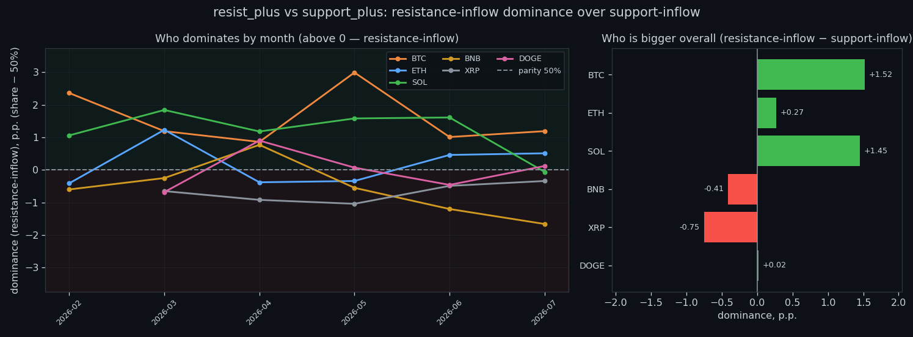
② Does it predict the size of the next move
This is the core question. Rank correlation with the size of the next move is positive on 6 of 6 coins, and strongest at the shortest horizon — +0.43 on BTC at 5s. By the daily scale it fades to +0.07. In plain terms: when wall build-up runs high, the following window tends to be more volatile than usual, and the effect strengthens as the window widens.
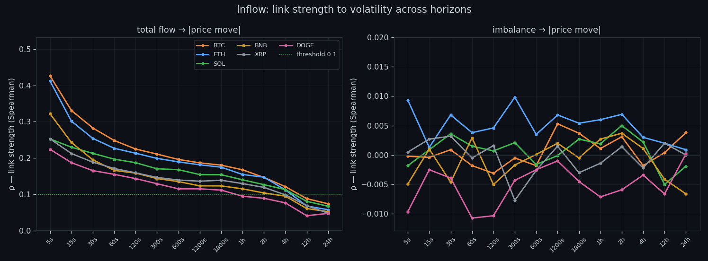
③ How much price actually moves per unit
We measure the price shift per +1σ of wall build-up, split into low, middle and high bands. The effect is small in absolute terms — fractions of a basis point per σ — and asymmetric between the two sides. That asymmetry is worth knowing, but it is nowhere near a tradable directional push on its own.
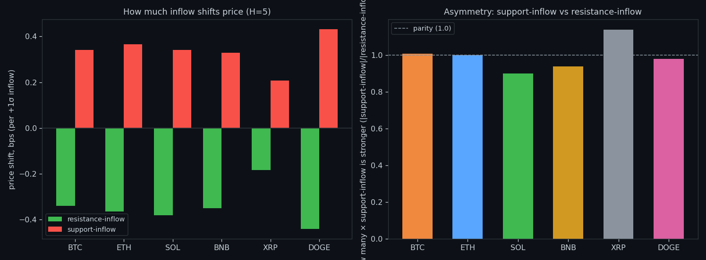
④ What counts as normal, by timeframe
'Normal' has no absolute value here: wall build-up measured per second is a different quantity from the same thing aggregated over an hour or a day, and the scale grows by orders of magnitude (log axis). Every threshold we use later is therefore relative to its own window and its own coin — never a fixed number carried across timeframes.
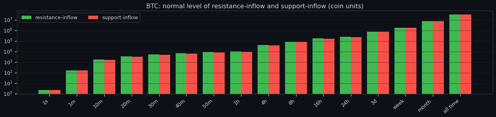
⑤ Where the link peaks
Each coin has a window where wall build-up lines up best with what follows, marked with a star. The peaks cluster at the short end — the information decays quickly, so any use of this signal has to act on the scale of seconds to minutes rather than hours.
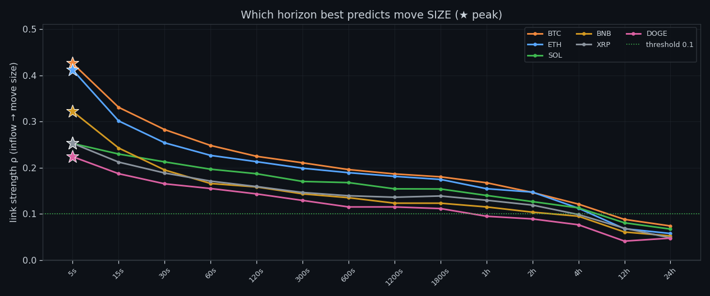
⑥ Does the imbalance predict direction
Barely. Taking the signed difference between the sell-wall build-up and the buy-wall build-up and correlating it with the direction of the next move gives at most ρ≈0.28 anywhere in the grid, and it collapses toward zero on most coins and most horizons. This mirrors what we found with volume: the book tells you how much, not which way.
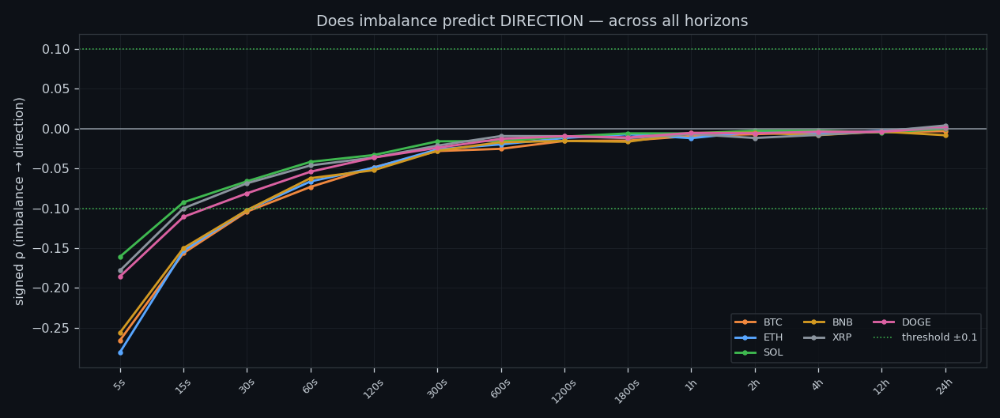
⑦ How long one-sidedness survives
A lopsided book does not stay lopsided. The share of imbalance that persists falls from about 73–79% at one second to roughly 7–10% by the twenty-minute mark. Whatever pushes wall build-up to one side is undone quickly — which is exactly why it cannot steer longer moves.
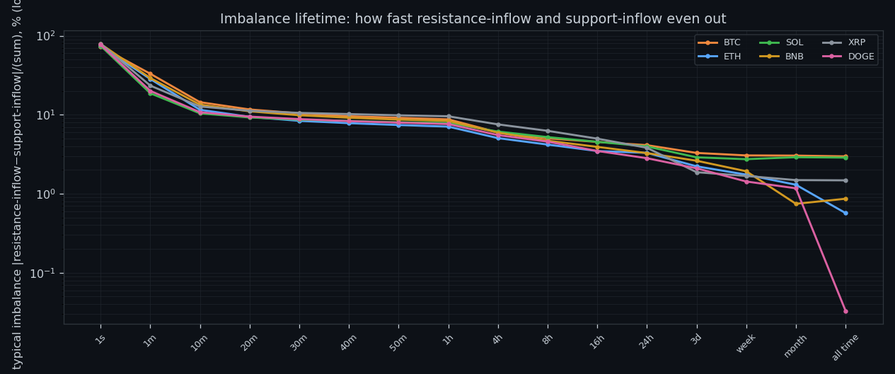
⑧ Memory: does a busy second predict a busy second
Yes, and this is the most robust property in the whole study. Lag-1 autocorrelation of wall build-up is 0.33–0.50 at the fastest scale and 0.30–0.40 at the slowest, on every coin. The quantity is sticky: its own past is a better predictor of its near future than anything about price.
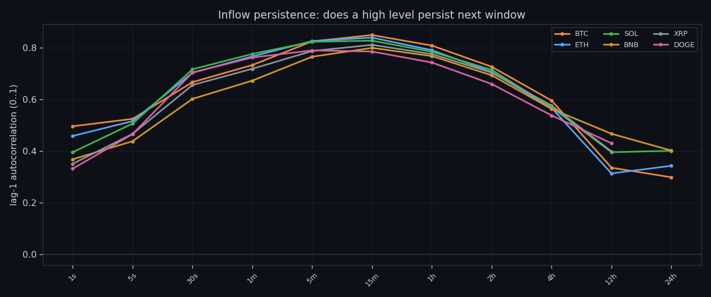
⑨ How extreme the extremes are
Extremes are not mild. A peak second can carry many times the normal level of wall build-up, which is why averages describe this data badly and why we work with quantiles and episodes instead of means.
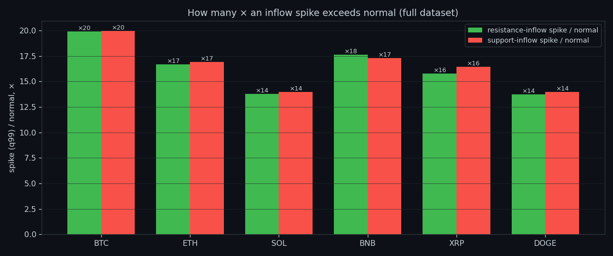
⑩ Where the seconds actually live
Most seconds are unremarkable: the distribution of wall build-up is concentrated in the low bands with a long thin tail. The market spends the overwhelming majority of its time doing nothing interesting, and the tail is where every episode we care about comes from.
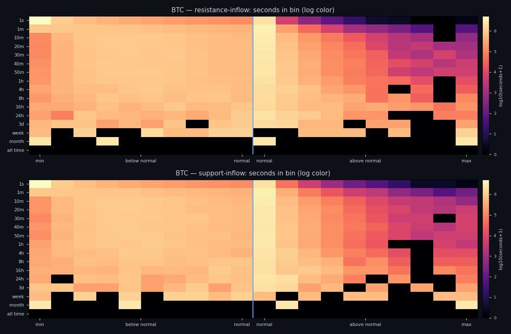
⑪ Spike, normal, lull — what each looks like
We label every moment as spike, normal or lull relative to its own baseline, then look at how price behaves inside each state. The states differ from each other in volatility far more clearly than in direction — the same asymmetry that runs through the whole project.
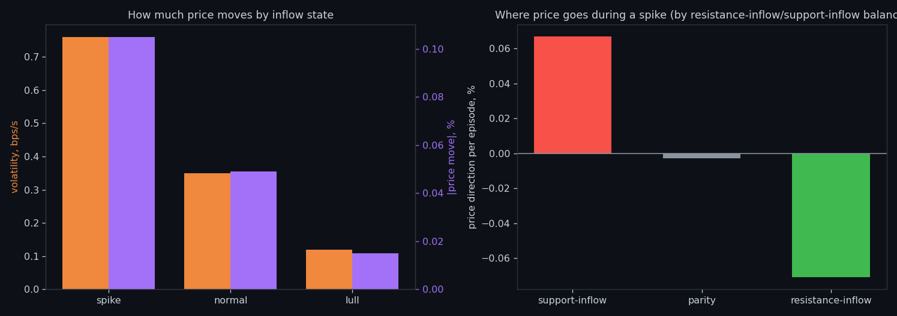
⑫ The same states laid over price
Here the labelling is placed directly on a price window so you can see it rather than trust it: where wall build-up flips state, and what price does around those flips.
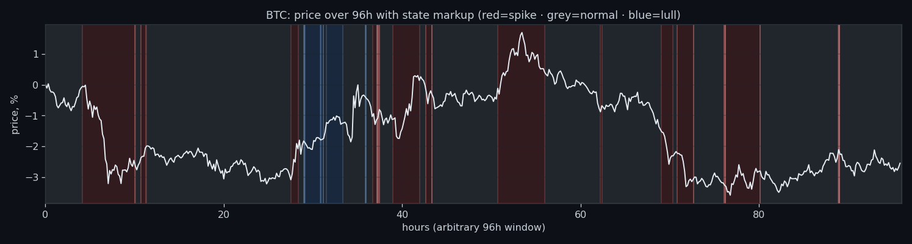
⑬ Extremes arrive in clusters
Spikes in wall build-up are not evenly spaced — they bunch into storms, and a spike inside a cluster is a different animal from an isolated one. Any threshold rule that ignores clustering will fire in bursts and then sit idle for hours.
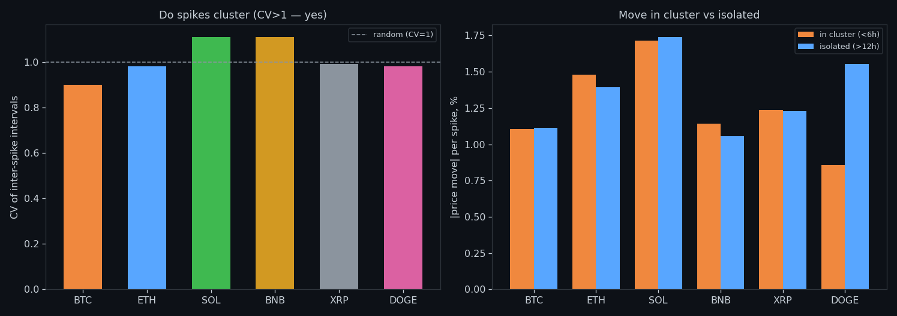
⑭ What it forecasts, honestly
Pulling it together: the two sides of wall build-up move together (coupling reaches 0.96–0.99 at the long end), the quantity forecasts its own future well, and it carries a positive signal about the size of the next move. What it does not carry — on any horizon we measured — is the side. That is the honest boundary of this study.
Research, not financial advice.
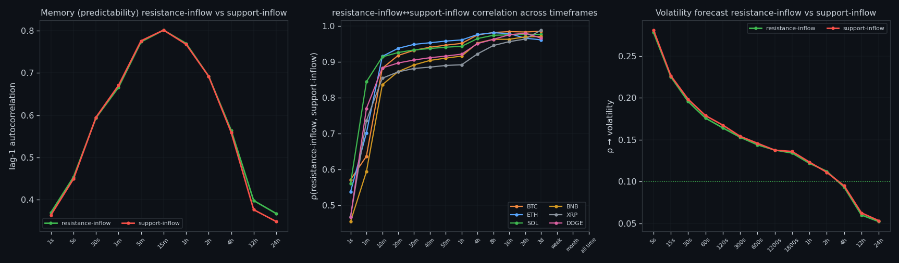
All our bots have been tested live. The best one is Line 7.
More than a dozen bots were built from this research. Line 7 — two small transformers that read 160 hours of order book as one picture — is the only one ahead of buy & hold in live trading: +5.44% since 5 Oct while BTC moved −5.29%. Every trade is in the report.
Everything on this site is research, not financial advice.
How to read this site in 5 minutes · All studies as one .md for AI · All research
← All research